遊びで植物を育てよう
2023/04/01
ハボタンの花が見頃です。
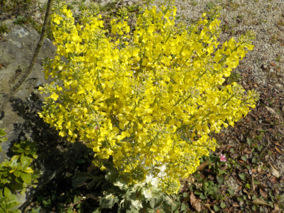
花が多く、豪華な感じに葉牡丹が咲いています。これくらいボリュームがあれば飾りとしていいですね。
でもこんなに立派な花がついたのはこの１本だけです。
【葉ボタンTOP】
【花TOP】
【園芸TOP】
2023/02/12
葉ボタンにブロッコリーっぽいのが出来ました。
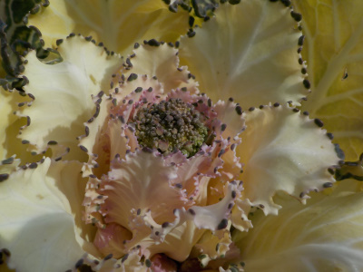
もうちょっとで花が咲きますね。
菜の花っぽいのが庭で咲いているのは変かな。でも咲いててもいいか。
とりあえず放置かな。
【葉ボタンTOP】
【花TOP】
【園芸TOP】
2023/01/03
2023年のお正月の葉ボタンです。
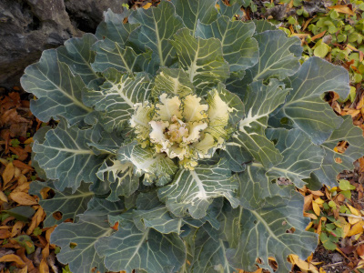
一昨年に種蒔きした葉ボタンです。色が地味ですが大きく育ちました。
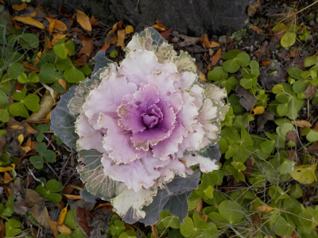
色違いもあるので紅白です。去年のお正月は小さくてとっても地味でしたが、今年は大きく育って満足です。
来年もこの株が生き延びてくれるといいです。
【葉ボタンTOP】
【花TOP】
【園芸TOP】
2022/10/30
葉ボタンの紫色が濃くなりました。
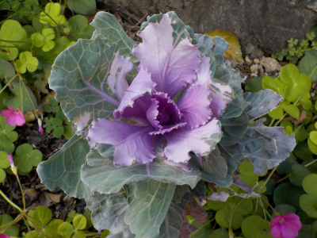
去年種蒔きした葉ボタンで、枯れずに順調に育ったものです。大きく育って、なおかつ色づいたのはこの1本だけです。
葉ボタンって難しいですね。
【葉ボタンTOP】
【花TOP】
【園芸TOP】
2022/09/04
葉ボタンの真ん中が黒くなりました。
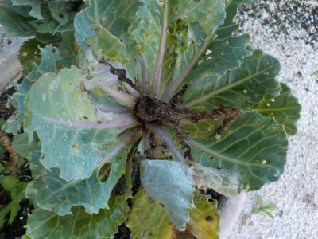
真ん中が黒くなって、腐ってる感じがします。
病気っぽいですね。黒い部分を削除したら復活するかな？
【葉ボタンTOP】
【花TOP】
【園芸TOP】
2022/08/07
葉ボタンが巨大化しています。
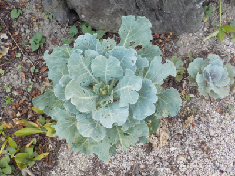
葉ボタンは花が咲いて枯れるイメージがありましたが、花が咲かずに元気に成長しています。
去年タネまきしたもののほとんどは写真右側の小さい方の大きさですが、1本だけとても大きく育っています。
庭に大きな野菜みたいなものがあってちょと異様です。このまま育ったら冬にどうなるんだろう？
【葉ボタンTOP】
【花TOP】
【園芸TOP】
2022/05/04
葉ボタンがガイコツっぽくなりました。
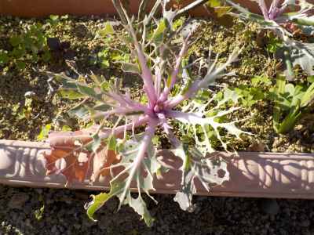
青虫に葉っぱを食べられています。たぶんモンシロチョウです。
もう葉っぱがなくなるので、青虫はお引越しが必要ですね。
【葉ボタンTOP】
【花TOP】
【園芸TOP】
2022/02/21
葉ボタンが緑色に変色中。
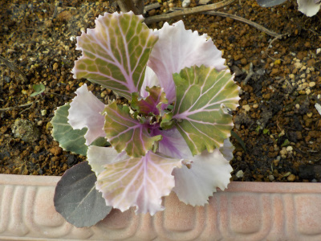
この前までピンク色でしたが緑色の葉っぱが出てきました。
何だか変わった色合いで面白いです。
【葉ボタンTOP】
【花TOP】
【園芸TOP】
2022/01/23
葉ボタンって冬場変化が少ないのでつまらないですね。
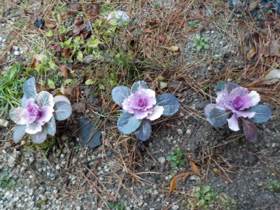
種から育てた葉ボタンですが、冬場はほとんど成長していないです。
株が小さいので地味だ。大きくならないなら、もっと間隔を狭くして植えればよかった。
【葉ボタンTOP】
【花TOP】
【園芸TOP】
2021/10/31
葉ボタンをプランターに植えました。
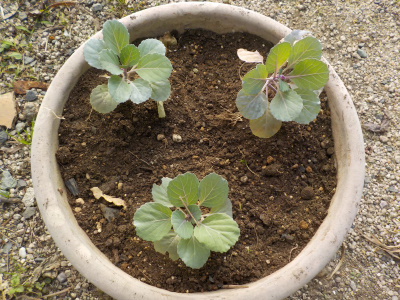
まだ葉ボタンっぽくないですが、大きくなったので植替えしました。
どれくらいの期間で葉ボタンっぽくなるでしょうね。
【葉ボタンTOP】
【花TOP】
【園芸TOP】
2021/09/19
葉ボタンを1本ずつポットに植え替えしました。
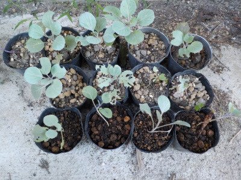
苗が大きくなったのでポットに1本ずつ植え替えしました。
今13本あります。何本かは虫の被害にあうと思うので、多めにしました。
【葉ボタンTOP】
【花TOP】
【園芸TOP】
2021/08/29
葉ボタンが葉ボタンっぽくないです。
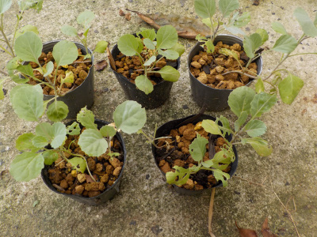
ひょろひょろと芽が伸びています。
これがどうやって葉ボタンになるんだろうかと思ってしまいます。でも、キャベツの苗も同じ感じですよね。
そのうち葉ボタンっぽく成長するでしょう。
【葉ボタンTOP】
【花TOP】
【園芸TOP】
2021/07/31
葉ボタンをポットに植え替えしました。
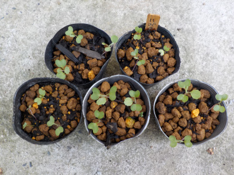
芽がちょっと大きくなったので、ポットに植え替えしました。
夏場はそんなに成長しないと思うので、2本とか3本一緒に植えました。
次の植え替えは何月かな？
【葉ボタンTOP】
【花TOP】
【園芸TOP】
2021/07/11
葉ボタンは密閉空間が向かないかな。
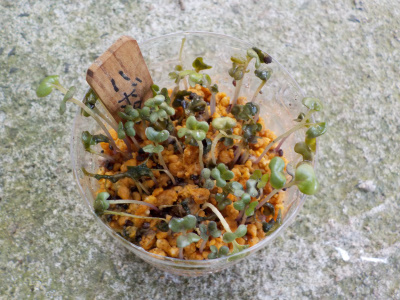
葉ボタンが発芽しましたが、ペットボトルの密閉空間が合わなかったみたいです。
半分くらい溶けました。
ペットボトルの上側を外して、今後育てようと思います。
【葉ボタンTOP】
【花TOP】
【園芸TOP】
2021/06/27
葉ボタンの種まきをしました。
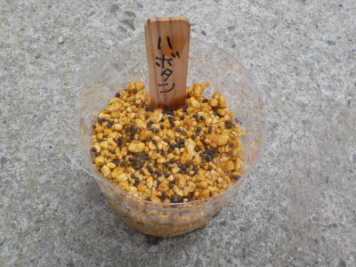
ペットボトルに葉ボタンの種を蒔きました。
発芽条件は何でしょうね。
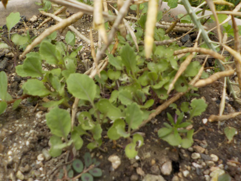
でも、種を採った親株をよーく見たら、すでに沢山の葉ボタンが発芽していました。
種蒔きする必要なかったです。
無駄なことをしてしまった。
【葉ボタンTOP】
【花TOP】
【園芸TOP】
2021/06/13
葉ボタンの種が出来ています。
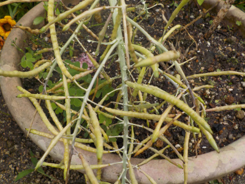
毎年冬になると植える葉ボタンですが、この種を採って植えたらどうなるでしょうね。
普通に親と同じ葉ボタンになるのか、色が付かないで野菜っぽくなるのか。
試しに種蒔きしようと思っています。
【葉ボタンTOP】
【花TOP】
【園芸TOP】
門松に葉牡丹って何か変じゃない？
【おいしいものを食べよう。】【しっかり寝よう。】
【ソロ活をしよう!】【季節感のあることをしよう。】【動画視聴はほどほどに。】【当サイトの全てのコンテンツは無断転載禁止です。】